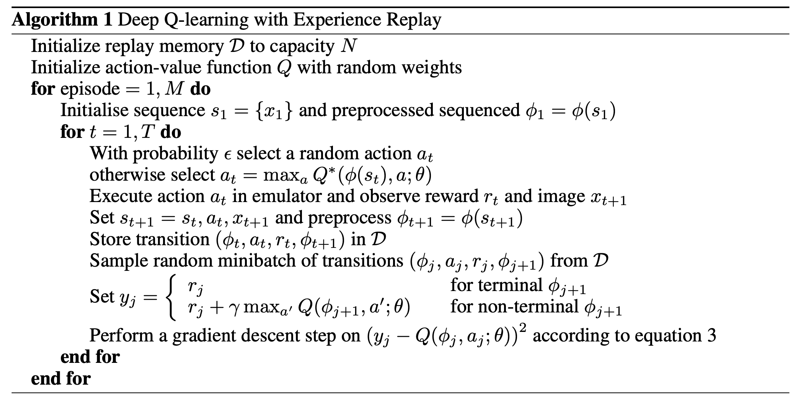
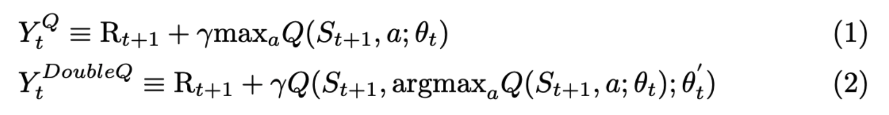
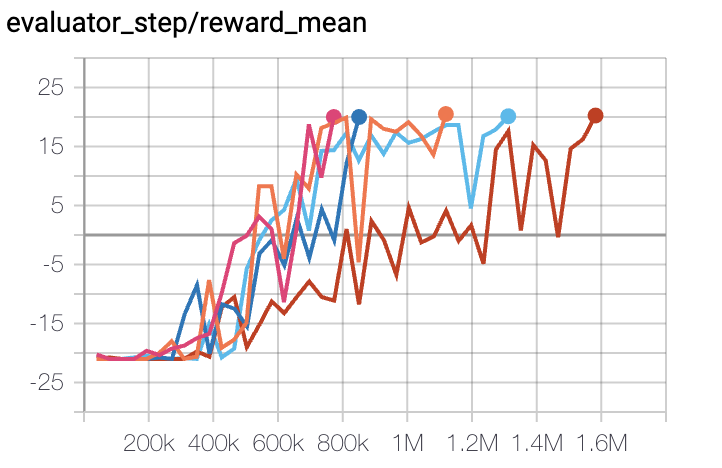
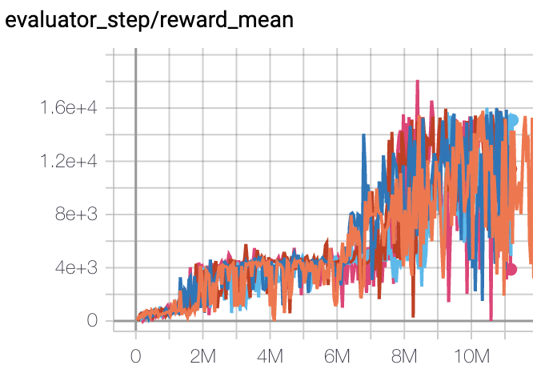

DQN¶
综述¶
传统的 Q-learning 维护一张 M*N 的Q值表（其中 M表示状态个数，N表示动作个数），通过贝尔曼方程（Bellman equation）来迭代更新 Q-value。这种算法在状态/动作空间变得很大的时候就会出现维度灾难的问题。而DQN与传统强化学习方法不同，它将 Q-learning 与深度神经网络相结合，使用深度神经网络来估计 Q 值，并通过计算时序差分（TD, Temporal-Difference） 损失，利用梯度下降算法进行更新，从而在高维空间的问题决策中（例如Atari游戏）达到了媲美甚至超过人类玩家的水平。
快速了解¶
DQN 是一个 无模型（model-free) 且 基于值函数（value-based） 的强化学习算法。
DQN 只支持 离散（discrete） 动作空间。
DQN 是一个 异策略（off-policy） 算法.
通常，DQN 使用 epsilon贪心（eps-greedy） 或 多项分布采样（multinomial sample） 来做探索（exploration）。
DQN + RNN = DRQN
DI-engine 中实现的 DQN 支持 多维度离散（multi-discrete） 动作空间，即在一个step下执行多个离散动作。
重要公示/重要图示¶
DQN 中的 TD-loss 是：
其中目标网络:math:Q_{text {target}，带有参数:math:theta^{-}，与在线网络相同，只是它的参数会每 target_update_freq 个环境步数从在线网络复制更新一次（超参数 target_update_freq 可以在配置文件中修改。请参考 TargetNetworkWrapper 了解更多详情）。
伪代码¶
{kind=link}
Note
与发表在 Nature 的版本相比，现代的 DQN 在算法和实现方面都得到了显著改进。譬如，在算法部分，TD-loss, PER, n-step, target network and dueling head 等技巧被广泛使用，感兴趣的读者可参考论文 Rainbow: Combining Improvements in Deep Reinforcement Learning。
扩展¶
DQN 可以和以下方法相结合：
优先级经验回放 （PER，Prioritized Experience Replay ）
Prioritized Experience Replay 用一种特殊定义的“优先级”来代替经验回放池中的均匀采样。该优先级可由各种指标定义，如绝对TD误差、观察的新颖性等。通过优先采样，DQN的收敛速度和性能可以得到很大的提高。
优先级经验回放（PER）有两种实现方式，其中一种较常用方式的伪代码如下图所示：
在DI-engine中，PER可以通过修改配置文件中的
priority和priority_IS_weight两个字段来控制，具体的代码实现可以参考 PER code 。具体的示例讲解可以参考 PER example多步（Multi-step） TD-loss
在 Single-step TD-loss 中，Q-learning 通过贝尔曼方程更新 \(Q(s,a)\):
\[r(s,a)+\gamma \max_{a^{'}}Q(s',a')\]在 Multi-step TD-loss 中，贝尔曼方程是:
\[\sum_{t=0}^{n-1}\gamma^t r(s_t,a_t) + \gamma^n \max_{a^{'}}Q(s_n,a')\]Note
在DQN中使用 Multi-step TD-loss 有一个潜在的问题：采用 epsilon 贪心收集数据时， Q值的估计是有偏的。 因为t >= 1时，\(r(s_t,a_t)\) 是在 epsilon-greedy 策略下采样的，而不是通过正在学习的策略本身来采样。但实践中发现 Multi-step TD-loss 与 epsilon-greedy 结合使用，一般都可以明显提升智能体的最终性能。
在DI-engine中，Multi-step TD-loss 可以通过修改配置文件中的
nstep字段来控制，详细的损失函数计算代码可以参考 nstep code 中的q_nstep_td_error目标网络（target network/Double DQN）
Double DQN, 在 Deep Reinforcement Learning with Double Q-learning 中被提出，是 DQN 的一种常见变种。
标准 Q 学习或 DQN 中在计算目标网络时的 max 算子使用同一个的 Q 值来选择和评估动作。这使得它选择的动作的价值更有可能被高估，从而导致过度乐观的价值估计。为了防止这种情况，我们可以将选择与评估分离。更具体地说，以下两个公式展示了二者的差异：
（1）标记的Q-learning和（2）标记的Double DQN中的目标如下图所示：
区别于传统DQN，Double DQN中的目标网络不会选择当前网络中离散动作空间中的最大Q值，而是首先查找 在线网络 中Q值最大的动作（对应上面公式中的 \(argmax_a Q(S_{t+1},a;\theta_t)\)），然后根据该动作从 目标网络 计算得到Q值 (对应上面公示中的 \(Q(S_{t+1},argmax_a Q(S_{t+1},a;\theta_t);\theta'_t)\)）。
综上所述，Double Q-learning 可以抑制 Q 值的高估，从而减少相关的负面影响。
DI-engine 默认实现并使用 Double DQN ，没有关闭选项。
Note
过高估计可能是由函数近似误差（近似Q值的神经网络）、环境噪声、数值不稳定等原因造成的。
Dueling head (Dueling Network Architectures for Deep Reinforcement Learning)
Dueling head 结构通过对每个动作的状态-价值和优势的分解，并由上述两个部分构建最终的Q值，从而更好地评估一些与动作选择无关的状态的价值。下图展示了具体的分解结构（图片来自论文 Dueling Network Architectures for Deep Reinforcement Learning）：

在DI-engine中，Dueling head 可以通过修改配置文件中模型部分的
dueling字段来控制，具体网络结构的实现可以参考 Dueling Head 中的DuelingHeadRNN (DRQN, R2D2)
DQN与RNN结合的方法，可以参考本系列文档中的 R2D2部分
{kind=link}
{kind=link}
实现¶
DQNPolicy 的默认 config 如下所示：
- class ding.policy.dqn.DQNPolicy(cfg: dict, model: Optional[Union[type, torch.nn.modules.module.Module]] = None, enable_field: Optional[List[str]] = None)[source]
- Overview:
Policy class of DQN algorithm, extended by Double DQN/Dueling DQN/PER/multi-step TD.
- Config:
ID
Symbol
Type
Default Value
Description
Other(Shape)
1
typestr
dqn
RL policy register name, refer toregistryPOLICY_REGISTRYThis arg is optional,a placeholder2
cudabool
False
Whether to use cuda for networkThis arg can be diff-erent from modes3
on_policybool
False
Whether the RL algorithm is on-policyor off-policy4
prioritybool
False
Whether use priority(PER)Priority sample,update priority5
priority_IS_weightbool
False
Whether use Importance Sampling Weightto correct biased update. If True,priority must be True.6
discount_factorfloat
0.97, [0.95, 0.999]
Reward’s future discount factor, aka.gammaMay be 1 when sparsereward env7
nstepint
1, [3, 5]
N-step reward discount sum for targetq_value estimation8
learn.updateper_collectint
3
How many updates(iterations) to trainafter collector’s one collection. Onlyvalid in serial trainingThis args can be varyfrom envs. Bigger valmeans more off-policy9
learn.multi_gpubool
False
whether to use multi gpu during10
learn.batch_sizeint
64
The number of samples of an iteration11
learn.learning_ratefloat
0.001
Gradient step length of an iteration.12
learn.target_update_freqint
100
Frequence of target network update.Hard(assign) update13
learn.ignore_donebool
False
Whether ignore done for target valuecalculation.Enable it for somefake termination env14
collect.n_sampleint
[8, 128]
The number of training samples of acall of collector.It varies fromdifferent envs15
collect.unroll_lenint
1
unroll length of an iterationIn RNN, unroll_len>116
other.eps.typestr
exp
exploration rate decay typeSupport [‘exp’,‘linear’].17
other.eps.startfloat
0.95
start value of exploration rate[0,1]18
other.eps.endfloat
0.1
end value of exploration rate[0,1]19
other.eps.decayint
10000
decay length of explorationgreater than 0. setdecay=10000 meansthe exploration ratedecay from startvalue to end valueduring decay length.
其中使用的神经网络接口如下所示：
- class ding.model.template.q_learning.DQN(obs_shape: Union[int, ding.utils.type_helper.SequenceType], action_shape: Union[int, ding.utils.type_helper.SequenceType], encoder_hidden_size_list: ding.utils.type_helper.SequenceType = [128, 128, 64], dueling: bool = True, head_hidden_size: Optional[int] = None, head_layer_num: int = 1, activation: Optional[torch.nn.modules.module.Module] = ReLU(), norm_type: Optional[str] = None)[source]
- forward(x: torch.Tensor) Dict[source]
- Overview:
DQN forward computation graph, input observation tensor to predict q_value.
- Arguments:
x (
torch.Tensor): Observation inputs
- Returns:
outputs (
Dict): DQN forward outputs, such as q_value.
- ReturnsKeys:
logit (
torch.Tensor): Discrete Q-value output of each action dimension.
- Shapes:
x (
torch.Tensor): \((B, N)\), where B is batch size and N isobs_shapelogit (
torch.FloatTensor): \((B, M)\), where B is batch size and M isaction_shape
- Examples:
>>> model = DQN(32, 6) # arguments: 'obs_shape' and 'action_shape' >>> inputs = torch.randn(4, 32) >>> outputs = model(inputs) >>> assert isinstance(outputs, dict) and outputs['logit'].shape == torch.Size([4, 6])
实验 Benchmark¶
environment |
best mean reward |
evaluation results |
config link |
comparison |
|---|---|---|---|---|
Pong (PongNoFrameskip-v4) |
20 |
 | Tianshou(20) Sb3(20) |
|
Qbert (QbertNoFrameskip-v4) |
17966 |
 | Tianshou(7307) Rllib(7968) Sb3(9496) |
|
SpaceInvaders (SpaceInvadersNoFrame skip-v4) |
2403 |

|
Tianshou(812) Rllib(1001) Sb3(622) |
注：
以上结果是在5个不同的随机种子（即0，1，2，3，4）运行相同的配置得到
对于DQN这样的离散动作空间算法，一般选择Atari环境集进行测试（其中包括子环境Pong等），而Atari环境，一般是通过训练10M个env_step下所得的最高平均奖励来进行评价，详细的环境信息可以查看 Atari环境的介绍文档
参考文献¶
Mnih, Volodymyr, et al. “Human-level control through deep reinforcement learning.” nature 518.7540 (2015): 529-533.
Wang, Z., Schaul, T., Hessel, M., Hasselt, H., Lanctot, M., & Freitas, N. (2016, June). Dueling network architectures for deep reinforcement learning. In International conference on machine learning (pp. 1995-2003). PMLR.
Van Hasselt, H., Guez, A., & Silver, D. (2016, March). Deep reinforcement learning with double q-learning. In Proceedings of the AAAI conference on artificial intelligence (Vol. 30, No. 1).
Schaul, T., Quan, J., Antonoglou, I., & Silver, D. (2015). Prioritized experience replay. arXiv preprint arXiv:1511.05952.